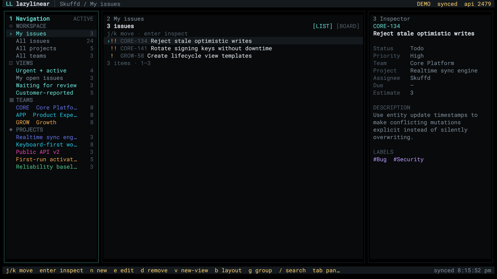

Keep your context
Persistent navigation, content, and inspector panels keep the selected work visible while you move through a workspace.
LazyLinear is a keyboard-first TUI built around the interaction model that makes lazygit feel fast. Browse issues, projects, teams, and custom views, then inspect and update the work without leaving the keyboard.

The working loop
Persistent navigation, content, and inspector panels keep the selected work visible while you move through a workspace.
Search lists, switch to boards, move issues, and create or edit core Linear records with discoverable shortcuts.
LazyLinear talks to Linear's GraphQL API. The interactive prompt masks your token and keeps it in process memory rather than writing it to disk.
It is deliberately focused on issues, projects, teams, and issue custom views. It does not cover every setting and surface in Linear.
Why it exists
Skuffd liked lazygit and was inspired to burn some tokens building the same kind of focused terminal workflow for Linear.
It worked so well that he decided to publish it.
Intended setup
Try it without credentials
Open the populated demo workspace and use the same interface and mutation flow as the live client.
npx lazylinear --demoInstall and connect
Install the executable, run it, then paste a Linear personal API key or an already-issued OAuth access token at the masked prompt.
npm install -g lazylinear
lazylinearFor the current source setup, full key map, authentication details, and product boundaries, use the repository documentation.